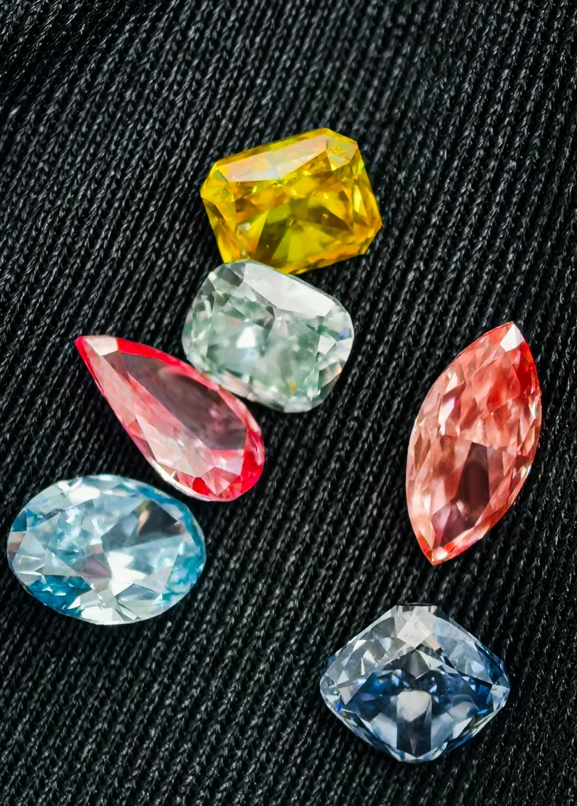
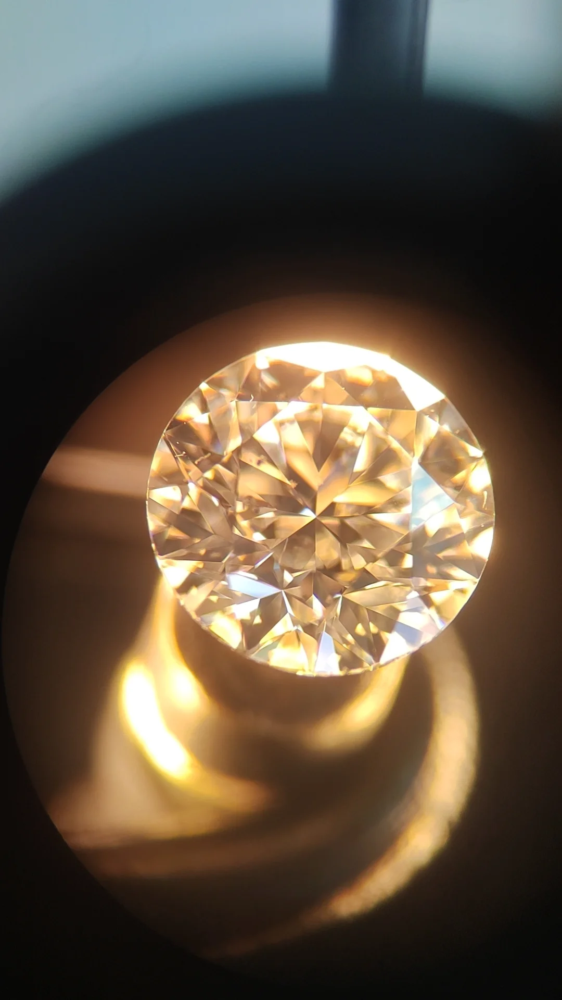

Choosing a memorial diamond for your pet is a big decision. This guide breaks down the practical things you need to know — size, color, quality, certification, and what questions to ask — so you can make a confident choice without getting lost in technical jargon.
Pet memorial diamonds have gone from a niche idea to a real option that pet owners and cremation services are seriously considering. The idea is simple: take your pet's hair, extract the carbon, and grow it into a real diamond under intense heat and pressure. But once you start looking at suppliers, the choices get overwhelming fast. What size should you pick? How do you know if the diamond is good quality? What does the certificate actually mean? And how much hair do you actually need to collect?
This guide is for anyone who needs straight answers. Whether you're a pet owner trying to understand the product, or a pet cremation service vetting a supplier for your clients, the same basic principles apply. Good diamonds are judged by four standards — carat weight, color, clarity, and cut. Beyond that, the supplier's process integrity and documentation matter just as much as the stone itself.
Key Takeaway: A memorial diamond is only as trustworthy as the documentation behind it. Always demand an independent certificate from a recognized lab (like IGI). If the supplier only offers their own paperwork, that's a red flag. And if they can't explain how they track your specific sample from start to finish, look elsewhere.
TL;DR — Quick Summary
Choosing a memorial diamond comes down to four practical standards: carat weight (0.5 ct is the realistic starting point), color (biological carbon typically yields near-colorless to faint yellow), clarity, and independent certification. A 1-carat stone requires a minimum of 6 grams of pet hair (10–20 grams recommended for margin), and the supplier's traceability documentation matters as much as the diamond itself. Always demand an independent certificate from a recognized lab like IGI.
How Big Should You Go? Carat Size and Hair Requirements
Carat is the measure of a diamond's weight. One carat equals 200 milligrams — roughly the weight of a paperclip. For memorial diamonds, the practical range runs from 0.3 to 2.0 carats, but 0.5 carat is the realistic starting point for a stone that looks substantial and holds value well. Anything smaller gets hard to cut into a nice shape and ends up looking more like a tiny speck than a gem.
Here is the part that trips people up: how much hair do you need? A lot of first-time buyers are surprised by the answer. A 1-carat diamond typically needs about 6 grams of your pet's hair or fur. For a 0.5-carat stone, you need about 3 grams. That sounds like more than you'd expect, and it is. The reason is that hair is not pure carbon — only a fraction of its mass is usable carbon. The rest is protein, water, and other organic material that gets stripped away during purification. So you need to start with enough raw material to leave a meaningful amount of carbon behind.
Why does this matter practically? Pet hair contains approximately 30–40% carbon by weight. If you have a small dog with short fur, you need to know upfront whether your sample is enough for the size you want. A good supplier will ask about your sample size before you order and recommend a realistic carat weight. If a supplier doesn't ask, they may be planning to blend your sample with generic carbon without telling you — and that's not a memorial diamond at all.
Larger diamonds also take longer to grow. HPHT growth typically requires 18–25 days regardless of target size, with larger stones grown at lower growth rates to maintain clarity. The press is running nonstop during that time, so the cost scales with the days, not just the final weight. For a detailed breakdown of why this matters, see our production timeline analysis.
Color: From Pure White to Fancy Shades
Diamonds are graded on a color scale from D (completely colorless) to Z (light yellow or brown). Most memorial diamonds made from pet hair naturally fall somewhere in the near-colorless to faint yellow range. This is not a defect — it's just what happens when biological carbon goes through the growth process. Pet hair contains nitrogen compounds that can tint the final stone slightly.
Most memorial diamonds from pet hair naturally achieve E–H near-colorless grades. Slight warmth in the G–H range is normal and often indistinguishable from colorless grades in everyday lighting. BioGem Lab does not offer D–F color upgrades or fancy color diamonds; our standard production yields E–H only.
Fancy colors — blue, yellow, pink — are theoretically possible through dopant engineering, but they require specialized process controls and are not part of standard memorial diamond production. BioGem Lab does not offer fancy color diamonds. Our standard color range is E–H only. If you are evaluating suppliers for a pet memorial program, confirm their actual color capabilities rather than assuming all colors are available.

A range of memorial diamonds showing natural color variations within the E–H near-colorless range.
Clarity: What Flaws Are Normal and What to Avoid
Clarity measures whether a diamond has internal spots or marks — called inclusions — or surface flaws called blemishes. The scale runs from FL (Flawless) down to I3 (included). Here's the reality: lab-grown diamonds made by HPHT (the method used for memorial diamonds) almost never reach the Flawless or Internally Flawless grades. That's because the metal catalyst used to help the diamond grow often leaves tiny metallic traces inside the stone. These are visible under magnification but do not affect the diamond's durability or appearance to the naked eye.
For memorial diamonds, VS1 to SI1 is the normal range. VS means very slight inclusions — you need a 10x magnifier to see them. SI1 means slightly included — a trained eye can spot them under magnification, but they are invisible without it. These are perfectly fine for a memorial diamond. The metallic traces are actually a signature of the growth process, not a sign of poor quality control.
What you should avoid are I-grade diamonds (I1, I2, I3). These have inclusions visible without magnification, which can make the stone look cloudy or reduce how much light it reflects. A memorial diamond should sparkle. If it looks dull, the clarity is probably too low. The certificate from an independent lab will tell you the exact grade and even show you a map of where the inclusions are located.
Understanding Diamond Manufacturing
Learn the technical fundamentals of HPHT diamond synthesis, catalyst systems, and growth kinetics that determine memorial diamond quality and consistency.
Cut: The One Thing That Depends on Craft, Not Chemistry
Cut is the only one of the four quality factors that is shaped by human hands, not by nature or the growth machine. A diamond can have perfect color and clarity, but if it is cut poorly, it will look dull and lifeless. The cut determines how light enters the stone, bounces around inside, and exits back to your eye as brilliance and fire.
For memorial diamonds, the round brilliant cut is the safest choice. It is the most popular shape because it maximizes sparkle across the widest range of viewing angles. The proportions are well understood: the flat top (the table) should be about 52-58% of the diamond's width, and the angles of the crown and pavilion have to hit narrow ranges to perform well. A stone that meets these standards gets an "Excellent" cut grade and will look lively in any light.
Other shapes — princess, cushion, oval, pear — are available but come with trade-offs. They require more of the raw crystal to be cut away, so you end up with a smaller final carat weight for the same starting material. If your raw crystal is limited by how much hair you collected, the round brilliant gives you the most visual impact per gram of starting material. Fancy shapes only make sense if you specifically prefer the look and have enough raw material to support the waste.
Certification: The One Document That Actually Matters
A diamond without a certificate is just a shiny rock with a story. The certificate is what makes it verifiable, insurable, and resellable. For memorial diamonds, you should expect a report from an independent gemological laboratory — IGI (International Gemological Institute) is the most common standard for lab-grown stones, but GIA and HRD are also recognized.
The certificate reports the four things we just discussed: carat weight, color grade, clarity grade, and cut grade. It also includes a diagram showing the exact location and type of any inclusions, and the physical dimensions of the stone. For lab-grown diamonds, the certificate explicitly says "Laboratory-Grown." This is not a bad thing — it is a required classification. It just means the diamond came from a lab, not a mine. It does not affect quality or value.
Do not accept a certificate issued by the manufacturer. Only a third-party lab has the independence to verify the grading objectively. A manufacturer grading their own diamond is like a student grading their own test — there is no check on accuracy. The certificate number should also be traceable on the lab's website, so you can confirm it is real and not a photocopy. For more on what separates real quality documentation from marketing fluff, see our materials engineering guide.

Independent labs inspect diamonds under magnification to verify clarity, map inclusions, and confirm grading accuracy.
Tracking Your Pet's Sample: The Part Most People Forget
The entire point of a memorial diamond is that the carbon came from your pet. If you cannot prove that, you might as well buy a generic lab-grown diamond. This is why sample tracking matters more than most people realize.
A professional memorial diamond supplier should be able to walk you through their tracking process: how your sample is logged when it arrives, how it is stored and physically separated from other samples, what records are kept at each step, and how the final diamond is linked back to your specific sample. The simplest way to ask about this: "Can you show me your batch records?" If the supplier gives a vague answer about being careful, that is not enough. They should be able to describe specific steps: unique IDs, photographs, dedicated equipment, or sealed containers.
Cross-contamination is the biggest risk. If a lab processes multiple samples in the same equipment without thorough cleaning between runs, carbon from one sample can mix with another. The result is a diamond that contains some of your pet's carbon and some from someone else's. There is no way to detect this after the fact, so prevention is everything. The BioGem Lab manufacturing process includes full batch traceability with documentation at every stage, so partners can verify the chain of custody for their customers.
Partner Note: BioGem Lab's white-label memorial diamond program includes sample-specific traceability documentation, partner-branded certificates of authenticity, and batch verification records. Every diamond is linked to its original carbon sample through a unique ID system that partners can reference for customer inquiries. For structured messaging frameworks, sales scripts, and channel strategies, see our marketing messaging guide for pet memorial diamonds. Explore partnership documentation.
Vetting a Supplier: Six Questions to Ask
If you are a pet cremation service or memorial business looking for a supplier, these six questions will quickly separate real manufacturers from resellers and middlemen.
1. Do you own your own lab? A supplier who outsources production cannot control quality, turnaround time, or customization. They are just passing your order to someone else and taking a margin. In-house manufacturing means direct oversight and faster response if something goes wrong.
2. How do you track samples? As discussed above, sample tracking is the core capability of a memorial diamond manufacturer. Ask for documentation. If they cannot show you their tracking system, they probably do not have one.
3. Do you provide independent certification? Any supplier who only offers their own certificate is cutting a corner. Third-party certification is the standard for a reason. It protects both you and your customers.
4. Can you explain your process? A real manufacturer knows their equipment, pressures, temperatures, and growth rates. A reseller will give vague answers or claim everything is proprietary. The technical parameters of HPHT synthesis are well documented in scientific literature, so there is no legitimate reason to withhold everything.
5. What are your wholesale terms? Look for transparent pricing, no minimum order requirements for testing, and partner-branded materials. Avoid suppliers demanding exclusivity, large upfront fees, or complex commission structures. For partnership terms and MOQ structures, contact BioGem Lab.
Pricing: What You Are Actually Paying For
Memorial diamond cost structure is driven by synthesis time (HPHT press days), energy consumption, cutting and polishing labor, and independent certification. Sample tracking adds operational overhead. The total cost reflects the custom nature of the product — each stone is grown from a specific biological sample rather than generic carbon feedstock.
Synthesis time is the biggest cost driver. A 1-carat diamond requires roughly twice the press time of a 0.5-carat stone, but the relationship is not perfectly linear because larger crystals need slower growth rates to maintain quality. Near-colorless grades (E–H) require strict purification and atmosphere control. Certification is a fixed cost per stone, so it represents a larger percentage of total cost for smaller diamonds.
When comparing suppliers, look at total cost, not just per-carat rate. A supplier who looks cheaper but skips independent certification, has no sample tracking, and offers no partner support may cost you more in the long run through complaints, returns, and lost customer trust. The end customer cares about the diamond, the paperwork, and the reliability of the service — not just the lowest price.
Bottom Line: What to Remember
The memorial diamond market is growing because pet owners want meaningful alternatives to urns and paw prints. The services that succeed in this market will be the ones who can explain the product confidently. A pet owner wants to know: how much hair do I need, how long will it take, what quality will I get, and how do I know it is really from my pet?
You do not need to be a materials scientist to sell memorial diamonds. But you do need to know the basics: 6 grams of hair for a 1-carat stone, 60 days for the full process, VS clarity is normal and fine, round brilliant is the safest cut, and independent certification is non-negotiable. The supplier who can answer these questions clearly and back up their answers with documentation is the one worth building a partnership with.
BioGem Lab provides full technical documentation, partner training materials, and process transparency to businesses that want to offer memorial diamonds with real quality behind them. If you want to see the lab, understand the process, or evaluate sample tracking before committing, contact the laboratory directly. For answers to common questions about shipping, insurance, customs, and partnership terms, see our partner FAQ.
Frequently Asked Questions
How much hair or fur is needed for a pet memorial diamond?
A 1-carat pet memorial diamond typically requires a minimum of 6 grams of hair (10–20 grams recommended for margin) or fur. This is more than you might expect because hair contains carbon, but not all of it is usable. For a 0.5-carat diamond, about 3 grams is recommended. The actual amount depends on your pet's hair type and density, so collecting a bit extra is always a good idea.
What carat sizes are available for pet memorial diamonds?
Pet memorial diamonds typically range from 0.5 to 2.0 carats, with 0.5 carat as the practical starting point. The most common choices are 0.5, 1.0, and 1.5 carats. Larger diamonds take longer to grow. BioGem Lab does not publish retail pricing; partners receive wholesale terms after partnership qualification.
What color options are available for pet memorial diamonds?
Most memorial diamonds from pet hair naturally achieve E–H near-colorless grades. Fancy colors like blue, pink, or vivid yellow are theoretically possible through dopant engineering but require specialized process controls and are not part of standard memorial diamond production. BioGem Lab does not offer fancy color diamonds; our standard production yields E–H color only.
What certification should a pet memorial diamond have?
A memorial diamond should come with a certificate from an independent lab like IGI (International Gemological Institute). The certificate verifies the carat weight, color, clarity, and cut quality. It also confirms the diamond is lab-grown. Never accept a certificate issued by the manufacturer itself — only third-party labs have the credibility you need for insurance, appraisal, and peace of mind.
How long does it take to create a pet memorial diamond?
The full process from receiving your pet's hair to delivering the finished diamond typically takes 60 to 90 days. This includes purifying the carbon, growing the diamond under high pressure and heat, cutting and polishing it, and sending it out for independent certification. Some suppliers promise faster turnaround, but rushing any step usually compromises quality.
How can a pet cremation service evaluate a memorial diamond supplier?
Ask six questions: (1) Do you own your lab or outsource? (2) How do you track each sample from start to finish? (3) Do you provide independent third-party certification? (4) Can you share your process details? (5) What are your wholesale terms and minimum orders? (6) Do you have any proprietary technology or patents? A supplier who treats these as secrets is probably not a real manufacturer.
Related Articles
EducationalMay 2026
Memorial Diamond Cost Breakdown: What Drives the Price
Detailed analysis of memorial diamond pricing components: synthesis duration, purification complexity, carat weight, color grade, and certification costs.
BioGem Lab supplies white-label memorial diamond manufacturing to pet cremation services, veterinary clinics, and memorial businesses. Zero inventory. Full brand control. ~60-day turnaround.